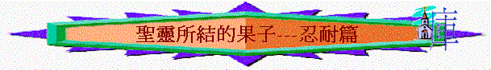

引言：
「聖靈所結的果子，就是仁愛、喜樂、和平、忍耐、恩慈、良善、信實、」加5:22
「廉潔、知識、恆忍、恩慈、聖靈的感化、無偽的愛心、」林後6:6
「凡事謙虛、溫柔、忍耐，用愛心互相寬容。」弗4:2
「但我們若盼望那所不見的，就必忍耐等候。」羅8:25
～忍耐的原文是‘makrothumia’有‘longsuffering’及‘patience’意思
～和合本譯「忍耐」及「恆忍」
～人遇到苦難困難時，仍要有長久容忍的去面對
～另外，聖經有時將「寬容」「等候」與忍耐放在一起，忍耐的人也同時要寬容別人的過失，並且也要耐性等候甚情的經過與結果
一.忍耐的事情
1.在世苦難
「你卻要凡事謹慎，忍受苦難，作傳道的工夫，盡你的職分。」提後4:5
2.人的逼迫
「假若有人強你們作奴僕，或侵吞你們，或擄掠你們，或悔慢你們，或打你們的臉，你們都能忍耐他。」林後11:20
「有婦人得自己的死人復活。又有人忍受嚴刑，不肯苟且得釋放（原文作贖），為要得著更美的復活。」來11:35
3.冤屈苦楚
「倘若人為叫良心對得住神，就忍受冤屈的苦楚，這是可喜愛的。」彼前2:19
4.罪人頂撞
「那忍受罪人這樣頂撞的，你們要思想，免得疲倦灰心。」來12:3
5.眾人軟弱
「我們又勸弟兄們，要警戒不守規矩的人，勉勵灰心的人，扶助軟弱的人，也要向眾人忍耐。」帖前5:14
6.神的管教
「你們所忍受的，是神管教你們，待你們如同待兒子。焉有兒子不被父親管教的呢？」來12:7
7.主的日子
「你們也當忍耐，堅固你們的心；因為主來的日子近了。」雅5:8
「但我們若盼望那所不見的，就必忍耐等候。」羅8:25
二.忍耐的工作
1.忍耐著結實
「那落在好土裡的，就是人聽了道，持守在誠實善良的心裡，並且忍耐著結實。」路8:15
2.忍耐行主道
「你們必須忍耐，使你們行完了神的旨意，就可以得著所應許的。」來10:36
「我們既有這許多的見證人，如同雲彩圍著我們，就當放下各樣的重擔，脫去容易纏累我們的罪，存心忍耐，奔那擺在我們前頭的路程，」來12:1
3.忍耐守誡命
「聖徒的忍耐就在此；他們是守神誡命和耶穌真道的。」啟14:12
4.忍耐去傳道
「務要傳道，無論得時不得時，總要專心；並用百般的忍耐，各樣的教訓，責備人、警戒人、勸勉人。」提後4:2
三.忍耐的果效
1.必然得救
「並且你們要為我的名被眾人恨惡。惟有忍耐到底的必然得救。」太10:22
「惟有忍耐到底的，必然得救。」太24:13
～此得救可能指將來主回來，身體得贖，我們得賞賜
2.得著盼望
「從前所寫的聖經都是為教訓我們寫的，叫我們因聖經所生的忍耐和安慰可以得著盼望。」羅15:4
3.與主作王
「我們若能忍耐，也必和他一同作王；我們若不認他，他也必不認我們；」提後2:12
4.得著冠冕
「忍受試探的人是有福的，因為他經過試驗以後，必得生命的冠冕，這是主應許給那些愛他之人的。」雅1:12
5.生命完備
「但忍耐也當成功，使你們成全、完備，毫無缺欠。」雅1:4
四.忍耐的心態
1.恆久忍耐
「愛是恆久忍耐，又有恩慈；愛是不嫉妒；愛是不自誇，不張狂，」林前13:4
2.百般忍耐
「我在你們中間，用百般的忍耐，藉著神蹟、奇事、異能，顯出使徒的憑據來。」林後12:12
3.凡事忍耐
「凡事包容，凡事相信，凡事盼望，凡事忍耐。」林前13:7
4.甘心忍耐
「你們既是精明人，就能甘心忍耐愚妄人。」林後11:19
5.歡喜忍耐
「照他榮耀的權能，得以在各樣的力上加力，好叫你們凡事歡歡喜喜的忍耐寬容；」西1:11
五.忍耐的動力
1.真神
「但願賜忍耐安慰的神叫你們彼此同心，效法基督耶穌，」羅15:5
2.聖經
「從前所寫的聖經都是為教訓我們寫的，叫我們因聖經所生的忍耐和安慰可以得著盼望。」羅15:4
「你既遵守我忍耐的道，我必在普天下人受試煉的時候，保守你免去你的試煉。」啟3:10
3.安慰
「我們受患難呢，是為叫你們得安慰，得拯救；我們得安慰呢，也是為叫你們得安慰；這安慰能叫你們忍受我們所受的那樣苦楚。」林後1:6
4.愛
「愛是恆久忍耐，又有恩慈；愛是不嫉妒；愛是不自誇，不張狂，」林前13:4
5.盼望
「在神我們的父面前，不住的記念你們因信心所做的工夫，因愛心所受的勞苦，因盼望我們主耶穌基督所存的忍耐。」帖前1:3
6.復活
「有婦人得自己的死人復活。又有人忍受嚴刑，不肯苟且得釋放（原文作贖），為要得著更美的復活。」來11:35
7.雲彩
「我們既有這許多的見證人，如同雲彩圍著我們，就當放下各樣的重擔，脫去容易纏累我們的罪，存心忍耐，奔那擺在我們前頭的路程，」來12:1
「並且不懈怠，總要效法那些憑信心和忍耐承受應許的人。」來6:12
A.希伯來書見證人
「有婦人得自己的死人復活。又有人忍受嚴刑，不肯苟且得釋放（原文作贖），為要得著更美的復活。又有人忍受戲弄、鞭打、捆鎖、監禁、各等的磨煉，被石頭打死，被鋸鋸死，受試探，被刀殺，披著綿羊山羊的皮各處奔跑，受窮乏、患難、苦害，在曠野、山嶺、山洞、地穴，飄流無定，本是世界不配有的人。這些人都是因信得了美好的證據，卻仍未得著所應許的；」來11:35-39
B.亞伯拉罕
「這樣，亞伯拉罕既恆久忍耐，就得了所應許的。」來6:15
C.約伯
「那先前忍耐的人，我們稱他們是有福的。你們聽見過約伯的忍耐，也知道主給他的結局，明顯主是滿心憐憫，大有慈悲。」雅5:11
8.基督
A.主是知道的
「我知道你的行為、勞碌、忍耐，也知道你不能容忍惡人。你也曾試驗那自稱為使徒卻不是使徒的，看出他們是假的來。」啟2:2
「我知道你的行為、愛心、信心、勤勞、忍耐，又知道你末後所行的善事，比起初所行的更多。」啟2:19
B.主會開出路
「你們所遇見的試探，無非是人所能受的。神是信實的，必不叫你們受試探過於所能受的；在受試探的時候，總要給你們開一條出路，叫你們能忍受得住。」林前10:13
C.主會再回來
「你們也當忍耐，堅固你們的心；因為主來的日子近了。」雅5:8
D.主作好榜樣
「願主引導你們的心，叫你們愛神，並學基督的忍耐。」帖後3:5
「你們若因犯罪受責打，能忍耐，有什麼可誇的呢？但你們若因行善受苦，能忍耐，這在神看是可喜愛的。你們蒙召原是為此；因基督也為你們受過苦，給你們留下榜樣，叫你們跟隨他的腳蹤行。」彼前2:20-21
a.長久忍耐
「並且要以我主長久忍耐為得救的因由，就如我們所親愛的兄弟保羅，照著所賜給他的智慧寫了信給你們。」彼後3:15
b.寬容忍耐
「神設立耶穌作挽回祭，是憑著耶穌的血，藉著人的信，要顯明神的義；因為他用忍耐的心寬容人先時所犯的罪，」羅3:25
c.甘心忍受
「仰望為我們信心創始成終的耶穌（或作：仰望那將真道創始成終的耶穌）。他因那擺在前面的喜樂，就輕看羞辱，忍受了十字架的苦難，便坐在神寶座的右邊。那忍受罪人這樣頂撞的，你們要思想，免得疲倦灰心。」來12:2-3